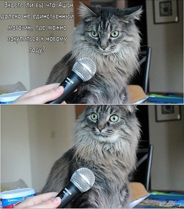

Какая-то хрень ни о чём
ТЕКСТ в понимании Ю.Лотмана — "Понятие "текст" употребляется неоднозначно. Можно было бы составить набор порой весьма различающихся значений, которые вкладываются различными авторами в это слово. Характерно, однако, другое: в настоящее время это, бесспорно, один из самых употребимых терминов в науках гуманитарного цикла. Развитие науки в разные моменты выбрасывает на поверхность такие слова; лавинообразный рост их частотности в научных ТЕКСТАХ сопровождается утратой необходимой однозначности. Они не столько терминологически точно обозначают научное понятие, сколько сигнализируют об актуальности проблемы, указывают на область, в которой рождаются новые научные идеи. История таких слов могла бы составить своеобразный индекс научной динамики.
ТЕКСТ в понимании Ю.Лотмана — "Понятие "текст" употребляется неоднозначно. Можно было бы составить набор порой весьма различающихся значений, которые вкладываются различными авторами в это слово. Характерно, однако, другое: в настоящее время это, бесспорно, один из самых употребимых терминов в науках гуманитарного цикла. Развитие науки в разные моменты выбрасывает на поверхность такие слова; лавинообразный рост их частотности в научных ТЕКСТАХ сопровождается утратой необходимой однозначности. Они не столько терминологически точно обозначают научное понятие, сколько сигнализируют об актуальности проблемы, указывают на область, в которой рождаются новые научные идеи. История таких слов могла бы составить своеобразный индекс научной динамики.